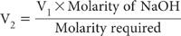

This soil pH procedure is used to assess qualitatively the presence of reactive hydroxyl Al groups. These occur, for example, in allophane and Al-humus complexes (Isbel 1998). When immersed in a solution of NaF, active Al adsorbs F– with a consequent release of OH–, leading to higher pH values. High pH values in NaF are found in soils derived from volcanic ash and in illuvial horizons of podzolised soils (Fielders and Perrott 1966). The rapidity of the pH increase determines the laboratory assessed ‘reactivity class’ (see Table 4.4).
Table 4.4. Laboratory assessed ‘reactivity class’ (adapted from Isbell 1998)
Lab. ‘reactivity class’ |
Class definitŠn |
|
0 |
Non-reactive |
No pH change within 2 min |
1 |
Very weak |
Minor pH increase after 2 min |
2 |
Weak |
Minor pH increase after 1 min |
3 |
Moderate |
Measurable pH increase by 1 min |
4 |
Strong |
Measurable pH increase after 10–20 s |
5 |
Very strong |
Measurable pH increase within 10 s |
0.25% (w/v) Phenolphthalein Indicator
Dissolve 0.25 g phenolphthalein (C20H14O4) in 100 mL of 95% ethanol (C2H5OH).
Sodium Hydroxide Solutions
45% Sodium Hydroxide Solution
Add about 100 g sodium hydroxide (NaOH pellets) to a 500 mL flask. Add 100 mL of CO2-free deionised water and swirl until solution is complete. Cool, close with rubber stopper, and set aside for ≈10 days until all Na2CO3, which is insoluble in concentrated NaOH solutions, has settled, leaving the solution perfectly clear.
0.01 M Sodium Hydroxide
Dilute 0.5 mL 45% NaOH solution to 1 L with CO2-free deionised water. Avoid unnecessary contact of this solution with the atmosphere. Standardise against potassium hydrogen phthalate. Dissolve 2.0422 g potassium hydrogen phthalate (KHC8H4O4, previously dried for 2 h at 110°C) in CO2-free deionised water and dilute to 1.0 L in a volumetric flask to give a 0.01 M solution. Pipette 25 mL of this standard solution into a flask and titrate with the above NaOH solution to the endpoint at pH 8.3–8.6, or as indicated by phenolphthalein.
For a 25 mL aliquot, molarity of NaOH
If required the molarity may be adjusted to a predetermined concentration by diluting the NaOH solution according to the formula:

where V1 is the volume of solution to be diluted to V2.
Saturated Sodium Fluoride Solution (≈1 M)
Add 1.0 L deionised water to 45 g NaF in a plastic bottle. Shake well and stand for about 2 days with occasional shaking. After excess NaF has settled, check that pH is between 7.2 and 8.1. Take a 50 mL aliquot, heat to boiling, add 5 drops of 0.25% phenolphthalein and titrate while hot with 0.01 M NaOH to a pink end-point. If the pH of the solution exceeds 8.1 or if titratable acidity exceeds 0.25 cmolc/L (more than 1.25 mL 0.01 M NaOH for a 50 mL aliquot), discard and try another source of NaF.
Standardise the pH meter as described in Method 4A1.
Weigh 2.0 g air-dry soil into a suitable wide-necked bottle or jar. Add 100 mL saturated NaF solution, simultaneously insert the pH electrode array, and commence mechanical stirring. Measure any change in pH during this period, including the rapidity of any pH elevation across a period of at least 2 min after the NaF solution addition.
Report pH (1:50 soil/NaF solution) and the Lab. ‘reactivity class’, guided by Table 4.4.